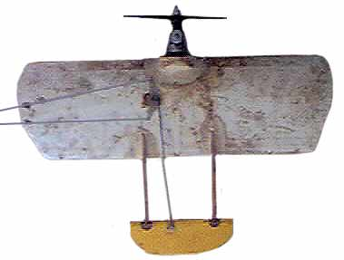

| I must admit, I was never much of a control line modeler. Likely, this was due to my early seduction by radio control flight. There is, however, one afternoon at about age 15, that will forever remain vividly in my mind's eye. | |
|
After reading an article about CL combat, I thought it might be fun to build a capable plane, despite no local competition. I started with an 18-inch span section of a molded foam wing. A block of pine was let into the leading edge with a healthy dab of 5-minute epoxy. Twin 6-inch booms were notched into the trailing edge, and a full flying stabilizer was hinged to their ends. A trusty Cox .049 reed valve engine was screwed to the pine block, and a bellcrank, leadouts, and pushrod were expeditiously fitted. I enlisted the aid of a next door neighbor a few years my junior, and set out to commit aviation.
Despite great eagerness, my hapless assistant was not experienced in the ways of models. He did a good enough job helping me get set up, string the 35-foot control lines and soon we were going through the usual efforts to start the balky motor. Unfortunately, he had not yet acquired the necessary appreciation for the capabilities of a Cox engine. However that lesson was not far off. Eventually the .049 roared to life, and I dashed for the "cockpit". On my nod, the model was released, and it was mere nanoseconds later, I realized we had a "situation".
|
 |
|---|---|
|
The slight up elevator I had held to keep the nose of the plane out of the earth was much more effective than anticipated. Before I could react, the plane was looping back up and over towards the exact end of my partner's nose! That's right, a loop diameter less than his arm's length. I can only surmise that our enthusiasm for a new model, and young age, conspired to erase from our minds all thoughts of safety. I had not noticed that he had held the plane for launch with an outstretched hand on each wing tip. Making the natural assumption that the plane would fly forward, he was immediately behind it within the circle of flight. Thankfully, the control response was so great, that the plane completed its loop before slicing through his face. I fed in just a touch of down at the bottom of the loop to fly safely away. The model, however, was still significantly faster than my skills. The down elevator didn't happen until the model was half way around its next loop, and it rocketed straight and level, inverted, directly through the airspace that had previously been occupied by my neighbor's face. I can gladly say "previously", as he had a solid sense of self preservation and at about this same time was rapidly planting his face in the dirt at his feet. After about half a lap of chasing the plane, I buried the propeller in the field and we got a chance to breathe, and review our safety procedures.
The total time of that first flight was likely less than five seconds, but no matter. It had demonstrated clearly that we had one hot ship! A few more attempts at flight that afternoon gradually calmed it down a bit, as my reactions eventually tuned to its response. Eventually the engine pulled the pine block free of the foam wing, and flew on its own for enough distance that we were not able to relocate it for repair. Now 35 years or so later, I still have the model in much the same condition in which it was retired that fateful afternoon. At some point a while back I grafted on another engine for more fun, but it has seen only a few flights since being repowered. | |
Copyright 1998-2015, Thayer Syme. All rights reserved